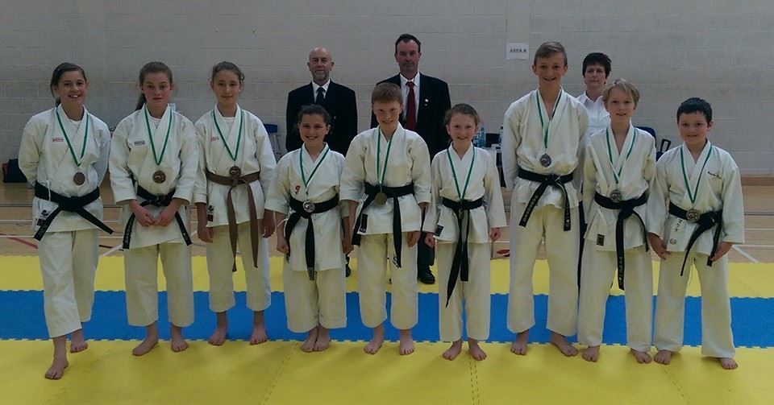
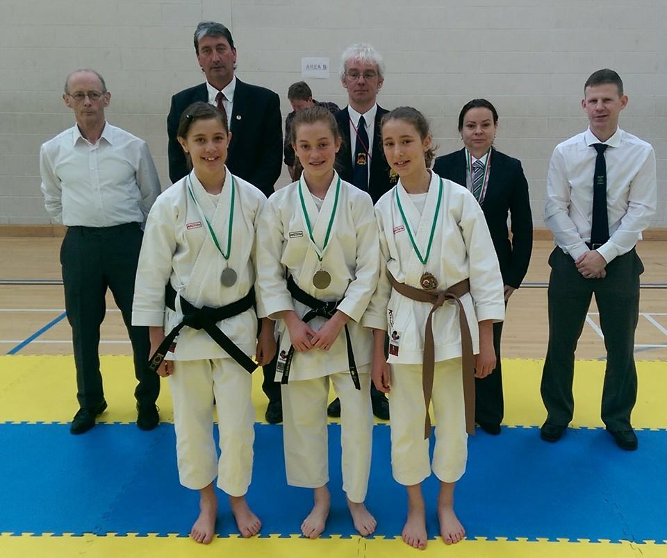
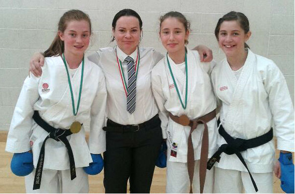

1st WTKO (Ireland) Friendly Open Championships
Posted on May 18, 2014
by Rik Hemsley
Sensei James Martin and students Jane, Amelie and Billie competed at the 1st WTKO (Ireland) Friendly Open Championships today.
Results for Bunbu Dojo squad:
James Martin 4th kata.
Billie bronze in kata, kumite and team kata.
Amelie silver in kata, bronze in team kata.
Jane gold in kata and kumite, bronze in team kata.




Outstanding efforts!